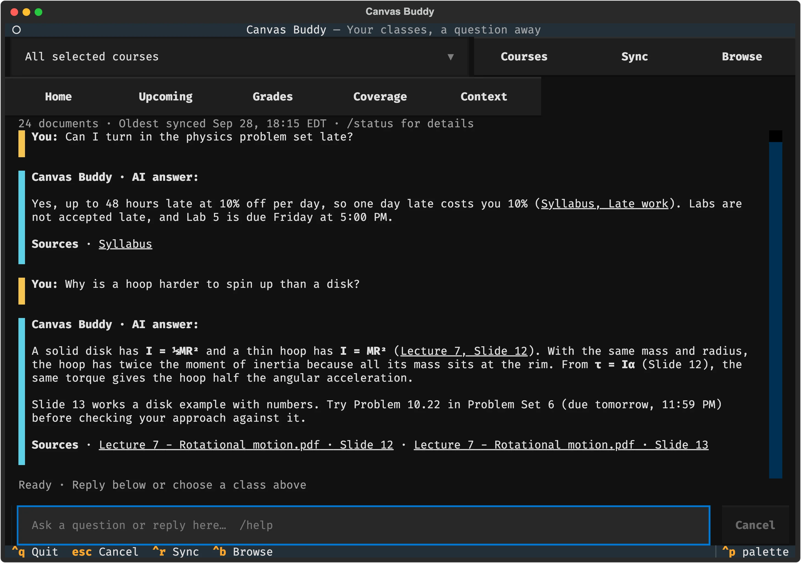
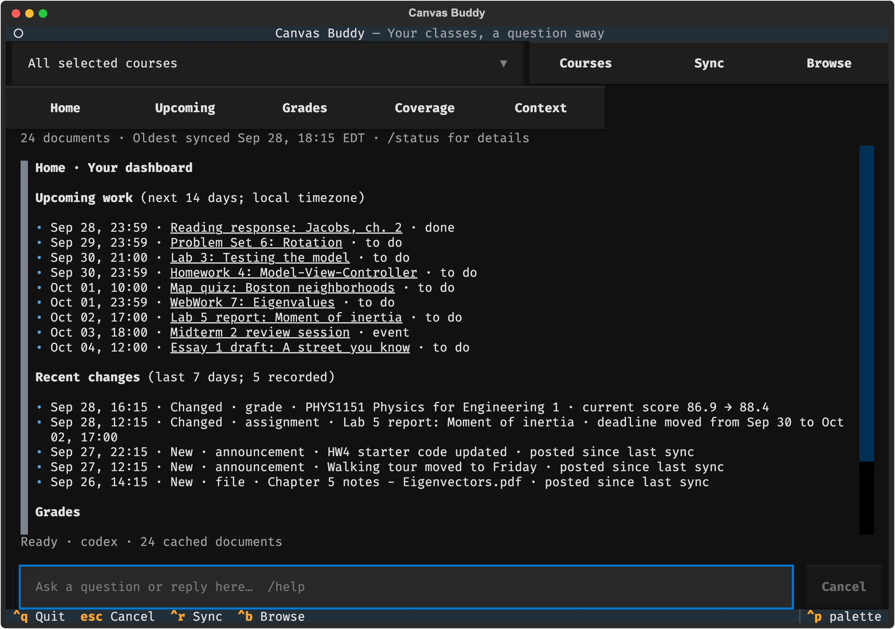
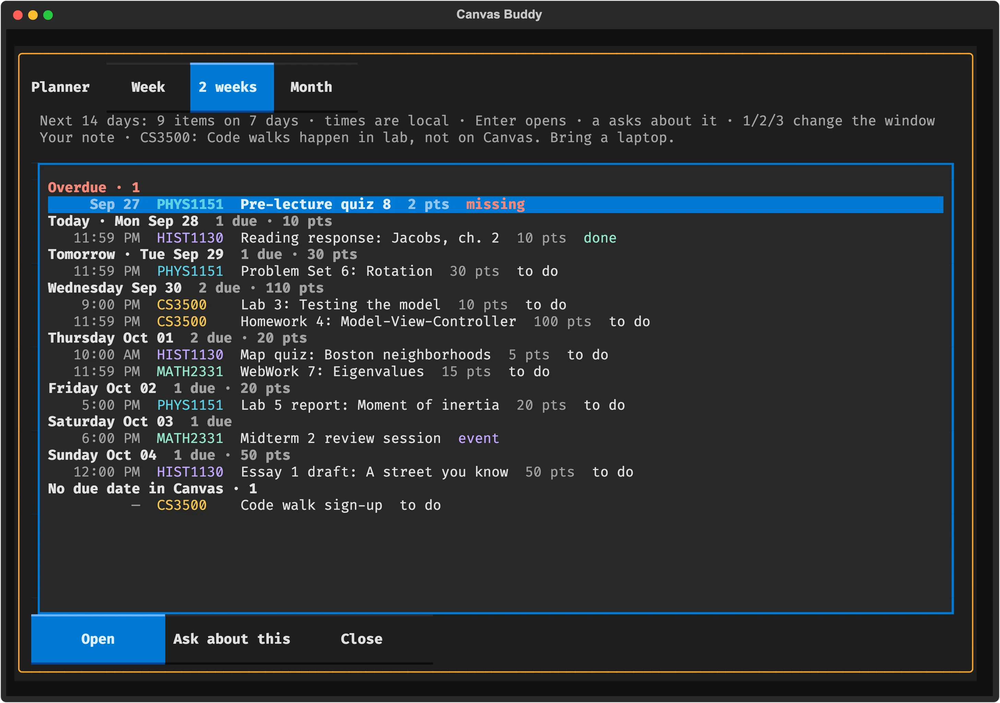
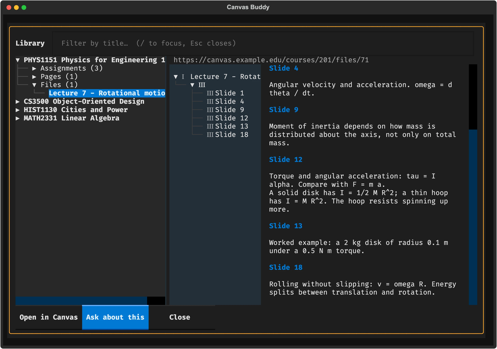

Ask your Canvas classes anything.
A terminal app for your courses. Answers come from your syllabus, slides and announcements, and link to the page they came from.
brew install naman0r/tap/canvas-buddy

Why
Most AI tools for school are built to do your homework. You get the grade and skip the learning.
Canvas Buddy is built to help you learn. It knows your syllabus, slides, assignments and announcements, so it explains concepts the way your class taught them, keeps track of what's due, and flags when a deadline moves. Every answer cites its source, so you can check it and keep reading.



Setup
-
Install with Homebrew. Run
canvas-buddy demoto try it with fake classes first.brew install naman0r/tap/canvas-buddy - Get a Canvas token. In Canvas, go to Account › Settings › + New Access Token, generate one and copy it. Canvas only shows it once. If the button is missing, your school has turned tokens off.
-
Sign in to a model:
codex login,opencode auth login, or a local Ollama model. Optional; search, deadlines and grades work without one. -
Run it, paste your Canvas URL and token, and pick your courses.
canvas-buddy
Read-only: it only makes GET requests to Canvas, keeps its cache on your computer, and never shows your token to the model.